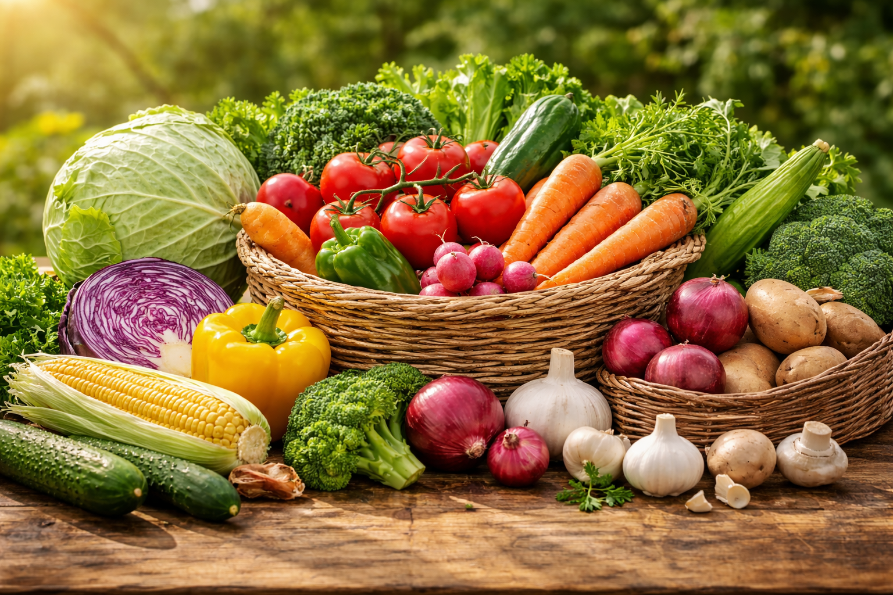
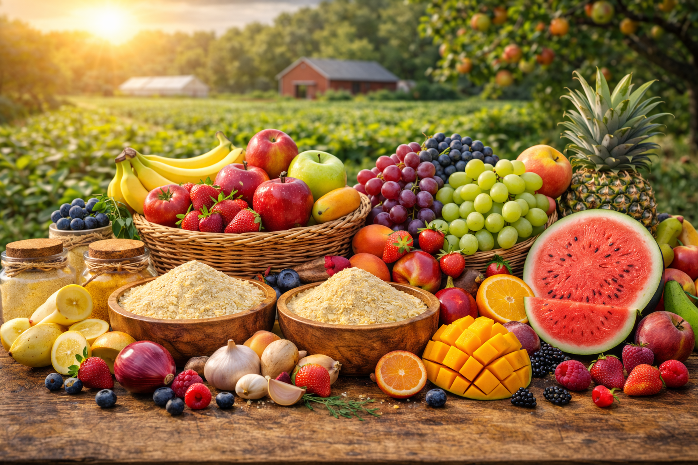

From Our Farm to Your Kitchen
Pure Farm Goodness
Experience the authentic taste of nature with our premium natural onion powder and banana powder. Carefully processed from farm-fresh produce to deliver pure, wholesome nutrition to your kitchen.

About ProFarm
ProFarm is a farm-based brand created by a farmer entrepreneur who produces natural powder products like onion powder and banana powder directly from farm produce.
We believe in bringing the goodness of our fields straight to your kitchen. Every product is crafted with care, maintaining the authentic flavor and nutritional value of fresh farm produce through our hygienic processing methods.
100% Natural
Pure ingredients without additives
Farm Fresh Ingredients
Sourced directly from our fields
Hygienic Processing
Clean and sanitized production
Chemical Free
No harmful chemicals or preservatives
Featured Products
Discover our range of premium farm-fresh products, from natural powders to organic produce

Onion Powder
Premium dehydrated onion powder perfect for cooking, seasoning, and food manufacturing needs.

Banana Powder
Nutrient-rich banana powder ideal for smoothies, baby food, and health supplements.

Garlic Powder
Aromatic garlic powder that adds authentic flavor to various culinary preparations.

Turmeric Powder
Pure turmeric powder with natural color and medicinal properties from farm-grown roots.

Fresh Vegetables
Farm-fresh vegetables grown naturally without harmful pesticides or chemicals.

Organic Fruits
Seasonal organic fruits harvested at peak ripeness for maximum flavor and nutrition.
From Farm to Powder
Our carefully crafted process ensures the highest quality and purity in every batch of powder we produce
Harvesting
Fresh produce collected at peak ripeness
Cleaning
Thoroughly washed and sanitized
Natural Drying
Sun-dried to retain nutrients
Grinding
Processed into fine powder
Packaging
Sealed in hygienic packs
Harvesting
Fresh produce collected at peak ripeness from our farms
Cleaning
Thoroughly washed and sanitized to remove impurities
Natural Drying
Sun-dried naturally to retain maximum nutrients
Grinding
Carefully processed into fine, uniform powder
Packaging
Sealed in hygienic, airtight packaging for freshness
Why Choose ProFarm
Sustainable sourcing, hygienic processing, and reliable supply for households and businesses.
Farm to Powder
Raw produce is collected from trusted farms and transformed into fine powder with strict quality checks.
Natural Flavours, Colour and Nutritional Value
No artificial colors or preservatives in our core product line, ensuring clean, natural nutrition.
Bulk & Retail
Flexible packaging options for distributors, food businesses, and direct home consumers.
What Our Customers Say
Real feedback from businesses and families who trust ProFarm products
"Best quality onion powder we've used in our restaurant. The flavor is authentic and consistent every time. Our customers love the difference it makes in our dishes."
Rajesh Sharma
Restaurant Owner
"I use banana powder for my baby's food and I'm so happy with the quality. It's 100% natural and safe. ProFarm has become my trusted brand for all powder products."
Priya Mehta
Homemaker
"Excellent bulk supply partner for our food manufacturing unit. Reliable quality, timely delivery, and great customer service. Highly recommend ProFarm to other businesses."
Amit Kumar
Food Manufacturer


Interested in Natural Farm Products?
Get in touch with us today to order fresh, organic farm products directly to your doorstep.